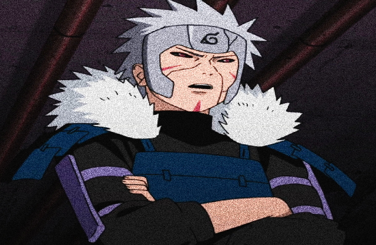

千手扉间，日本漫画《火影忍者》及其衍生作品中的角色，火之国木叶村的第二代火影，初代火影的弟弟，木叶村的奠基者之一。因重视传承而建立忍者学校及中忍考试制度培育人才，并设立暗部。成立木叶警务部队从而加强中央集权，令各村效仿。擅长研发忍术，开发了「飞雷神之术」、「影分身之术」以及禁术「秽土转生」，对忍界产生了深远的影响。注：官方设定集《阵之书》中显示，扉间与他的六位部下被金角部队所包围。为了保护部下，他自愿担任诱饵，并以火影的身份将意志托付给下一个世代，然后就在战场上为掩护部下撤退力竭而牺牲。在第四次忍界大战中一度被大蛇丸以秽土转生的形式复活，与其他被复活的三位火影一起前往战场支援忍者联军，大战结束后，灵魂回归净土。
木叶隐村的第二代火影，生前以忍者中速度最快为傲，飞雷神战术用的出神入化，被誉为忍界速度最快的忍者。扉间常为哥哥柱间出谋划策，拥有冷静睿智的头脑以及高超的分析能力，在战斗中扉间极为敏锐，具有刚猛狠辣的作战风格、出色的应敌策略以及超强的感知能力。同时扉间对后辈年轻忍者充满信心。
银发红瞳、脸上带着护面样式的铁质护额，脸颊上有着三道红色印记，身穿黑色紧身作战服，外部配以蓝色的叠层挂甲，双肩处配以连着背部的白色羽绒毛领。青年时期的扉间护额上纹有千手一族的标志，在创立木叶隐村后扉间护额上纹有木叶标志。在任期间扉间身穿白色火影袍、内衬蓝色紧身衣。
千手扉间的核心位移能力，一技能分为三段， 第一段：本体向前瞬移突刺并在原地留下一个影分身。（一技能的第一段可以利用方向键进行上下移动。） 第二段：与第一段一样本体向前瞬移突刺对手。（区别是第二段无法利用方向键进行上下移动） 第三段：本体与影分身交换位置并引爆影分身从而炸伤对手。（可以远距离撤退，用于骗替身） 当对手身上留有飞雷神术式时，无论对手距离有多远，本体都可以瞬间从对手的面前或背后出现并攻击对手（可以利用方向键进行左右移动以此决定本体瞬身出现的位置） 值得一提的是，一技能的第一段和第二段都可以在空中使用。
短按释放后滑行距离几乎可以贯穿全场。在滑行过程中可以点击普攻释放水遁·水龙卷，也可以长按二技能直接释放水遁·水龙卷。这招打击对手的伤害速度极快，威力强大。（长按二技能时会有短暂的无敌效果）
非全屏攻击奥义技能，拥有一定的Y轴限制，释放时需尽量确保视野内敌人与自身处于X轴同一水平线。奥义技能后可以衔接普攻与二技能，可以作为收尾或连招衔接使用。
